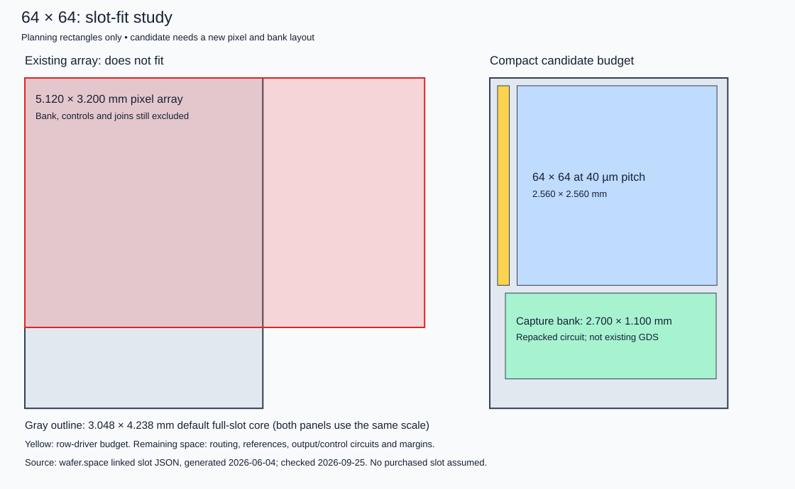

Target: wafer.space GF180; working silicon takes priority over frame rate. The existing array and bank cannot fit a standard full slot. The compact pixel, capture column and physically joined single tile pass scoped development checks; the compact shared two-column control also passes and compact 1×64 is next. The 64-pixel row and isolated capture column have passing evidence; the full 64×64 chip is not yet assembled.
Current completion plan · Slot-fit arithmetic · Solver preparation

Docker access is restored. The 40 µm pixel and 2×2 control pass main DRC and both LVS paths; the 2×2 nominal/hot electrical and timestep screens pass. The reset follow-up passes 12 transients and six extended-reference sets with audited shunt placements; the raw isolated extraction remains diagnostic. The 40 µm-pitch capture column passes main DRC/both LVS paths, abutment spacing, 60 transients and 36 references (165.716 µV tracking; 395.222 µV layout–schematic shift). The physical pixel/column join now passes 54 transients and 72 references with 419.404 µV worst total capture/readout error. The separate layout–schematic response difference reaches 3.922 mV. The shared two-column bank passes main DRC/both LVS paths, 100 transients and 240 references (419.033 µV capture/readout; separate 5.821 mV layout–schematic difference). The compact 1×64 bank remains next. All four raw/reduced full-bank OP/reset attempts time out at 180 s without samples; full-chip release gates remain open. Earlier entries below preserve development history; the linked current plan supersedes the 3×3-first release sequence.